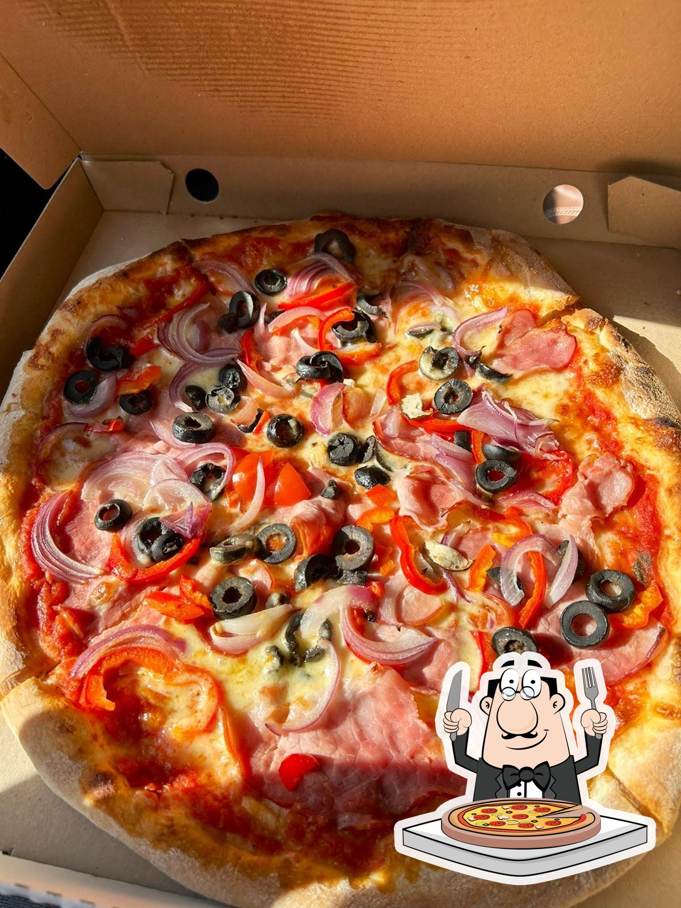
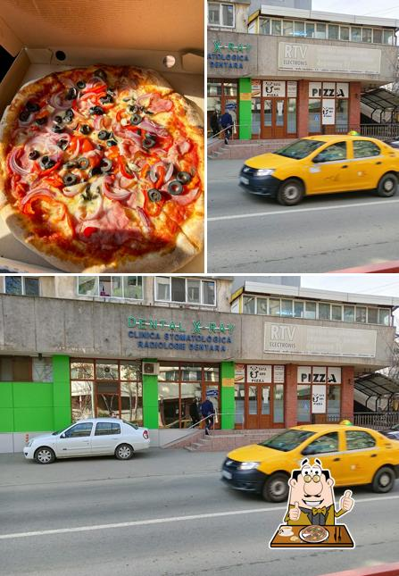

Comenzi & livrare · 0745 836 432
Pizza făcută din pasiune, în inima Tulcei.
Pizzeria Tata Urs a pornit din dragostea pentru mâncarea bună — și pentru pizza în mod deosebit. Blaturi coapte pe loc, sandvișuri generoase și oferte gândite pentru toată familia, pe Strada 1848.
Povestea noastră
Un proiect pornit din pasiunea pentru mâncarea bună.
Pizzeria Tata Urs este un proiect care a început din pasiunea pentru mâncarea bună, pentru pizza în mod deosebit. Aici fiecare blat este pregătit cu grijă, cu ingrediente pe care ni le-am dori și noi în farfurie.
Găsești la noi pizza la 32 și 42 cm, sandvișuri calde cu mozzarella și mezeluri alese, topping-uri la alegere și oferte gândite pentru familie și prieteni — momente în care a doua pizza vine pe gratis.
Ne găsești pe Strada 1848, la doi pași de centrul Tulcei, iar dacă preferi să rămâi acasă, îți aducem comanda prin livrare.
Cu poftă bună, echipa Tata Urs
Str. 1848 nr. 2, bl. 2, parter · Tulcea
Tata Urs
pizza coaptă cu grijă, în Tulcea
De ce Tata Urs
Simplu, cald și pe placul tuturor
Trei motive pentru care tulcenii revin la noi pentru pizza.
Pizza pregătită pe loc
Blaturi coapte cu grijă, la 32 și 42 cm, cu topping-uri la alegere — de la cremă de brânză la sos dulce sau picant.
Sandvișuri generoase
Chifle calde de 300 g cu mozzarella, prosciutto, salam sau șuncă și amestecuri de brânzeturi — pentru o masă rapidă și săţioasă.
Oferte de familie
Comanzi mai multe pizza și primești una pe gratis — oferte gândite pentru mese în familie, birou sau seri cu prietenii.
Ofertele casei
Cu cât comanzi mai mult, cu atât primești mai mult
Trei oferte simple, valabile la pizza noastră.
1
1 pizza mare + 1 pizza mică GRATIS
Comanzi o pizza mare și a doua, mică, vine din partea casei.
2
3 pizza mari + 1 pizza mare GRATIS
Perfect pentru masa în familie sau la birou — a patra e gratis.
3
3 pizza mici + 1 pizza mică GRATIS
Patru pizza mici la prețul a trei, pentru grupuri mici.
Galerie
Câteva imagini de la noi
Pizza noastră și localul de pe Strada 1848.
Pizza casei

Pizza & localul nostruOferte & sandvișuri
Program & Locație
Ne găsești pe Strada 1848
Program
LuniÎnchis
Marți10:30 – 21:00
Miercuri10:30 – 21:00
Joi10:30 – 21:00
Vineri10:30 – 21:00
Sâmbătă11:00 – 22:00
Duminică10:30 – 22:00